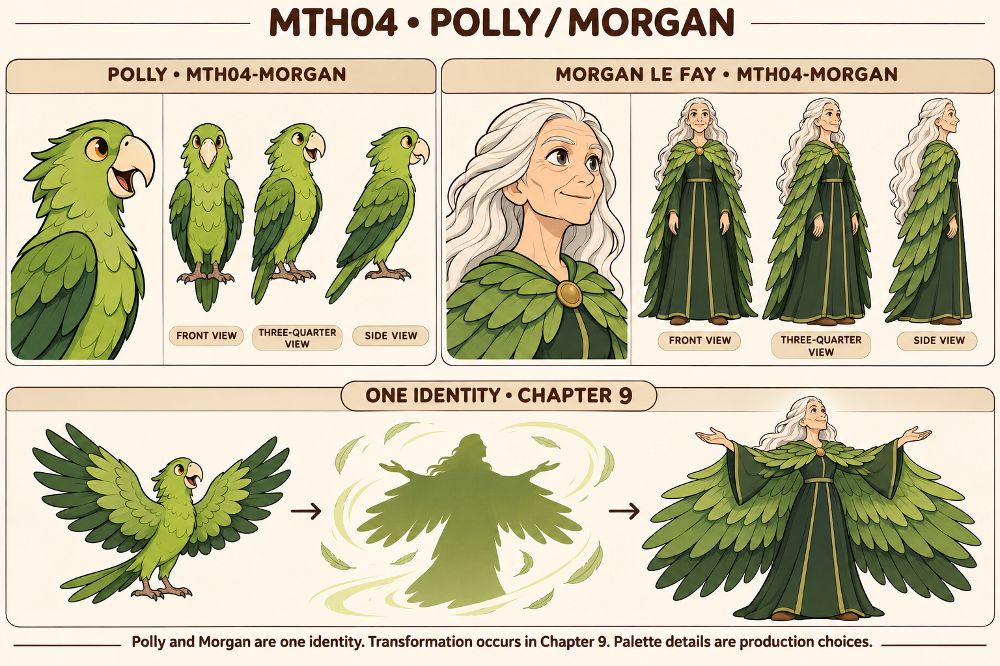

MTH-MORGAN · 4권 Morgan 시트 참조 연결 / 12권 전용 이미지 생성 대기


원문에 명시된 특징·사건
- 1장: 긴 흰 머리의 마법 도서관 사서로 나무집에 등장한다. 네 번째 두루마리는 Annie에게, 북극 책은 Jack에게 준다.
- 2장 도착 시 Morgan과 올빼미는 나무집에서 사라져 있다. 2~9장 사건에 Morgan을 함께 그리지 않는다.
- 10장: 귀환한 두 아이에게 M·L 글자가 빛나는 얇고 매끈한 나무 도서관 카드를 한 장씩 준다.
계승 기준·제작 선택
- 4권 이미지의 노년 얼굴, 긴 물결 흰 머리, 온화한 표정·성인 비율을 유지한다.
- 초록 로브·잎 망토·금색 브로치는 4권에서 이어가는 디자인 선택이다. 12권 원문이 색·잎 모양을 지정한 것은 아니다.
전용 이미지 시트 구성
- 정면·¾·측면 전신 / 얼굴 확대
- 두루마리 전달 / 책 전달 / 두 장의 도서관 카드 제시
크림 종이 바탕, 명료한 갈색 윤곽선, 부드러운 셀 음영. 인물 정면·¾·측면, 표정, 전신 비율과 소품을 검수합니다.
장면 생성 시 금지·주의
- 4권 시트에 함께 있는 앵무새 Polly나 변신 장면을 12권 사건으로 가져오지 않는다.
- 1장의 책과 두루마리 수령자를 바꾸지 않는다.
원문 근거
- Chapter 1 · And there was Morgan le Fay, the enchantress librarian. Her long white hair gleamed in the beam of Jack’s flashlight.
- Chapter 1 · Morgan pulled a fourth scroll from the folds of her robe. She handed it to Annie.
- Chapter 10 · She reached into the folds of her robe and took out two thin pieces of wood.